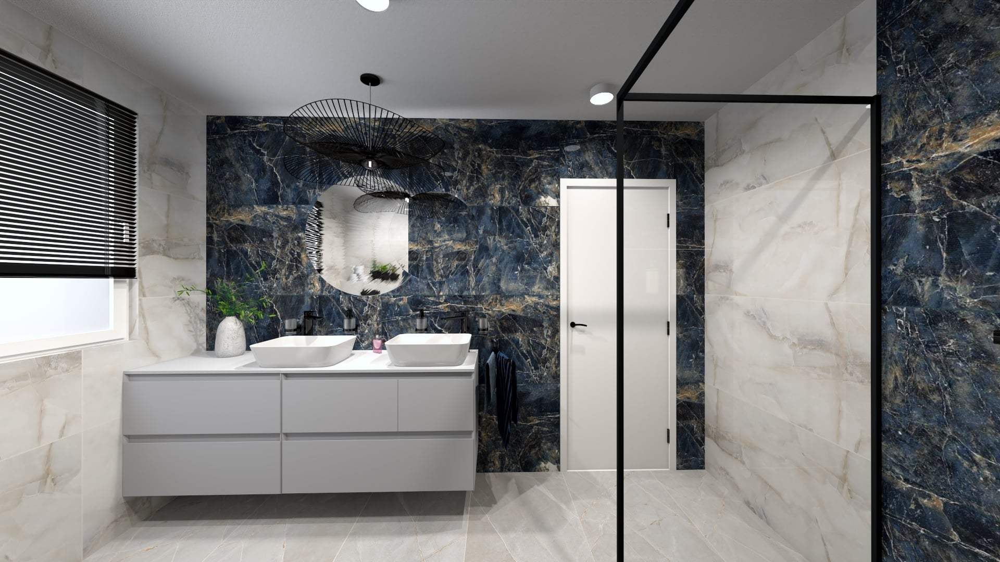
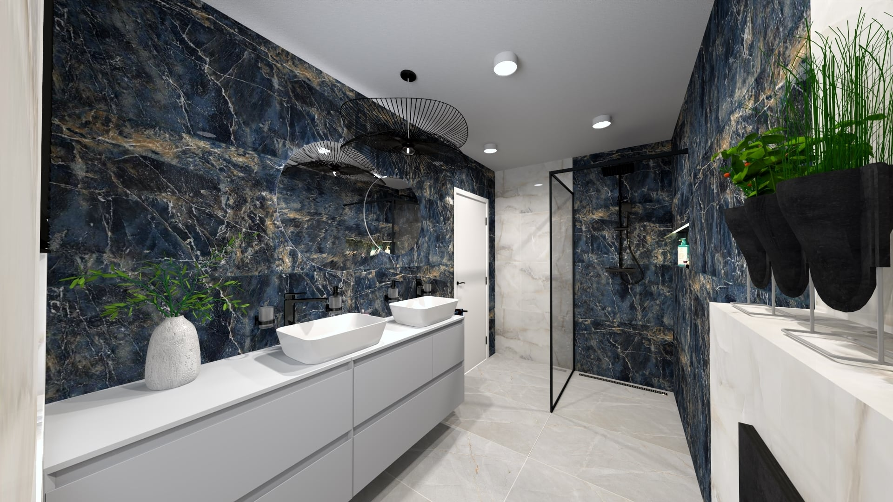

Skutočný luxus v priestore nespočíva v dekoráciách, ale v hlbokej emócii, ktorú dokáže vyvolať správne zvolená textúra a lom svetla. Tento koncept kúpeľne je navrhnutý ako intímna, kinematografická svätyňa pokoja. Hlboký, dramatický tón tmavomodrého mramoru so zlatistým žilovaním vytvára prísny, no neuveriteľne harmonický kontrast s čistotou bielej sanity.

